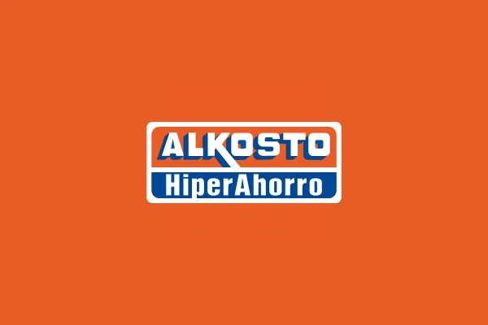
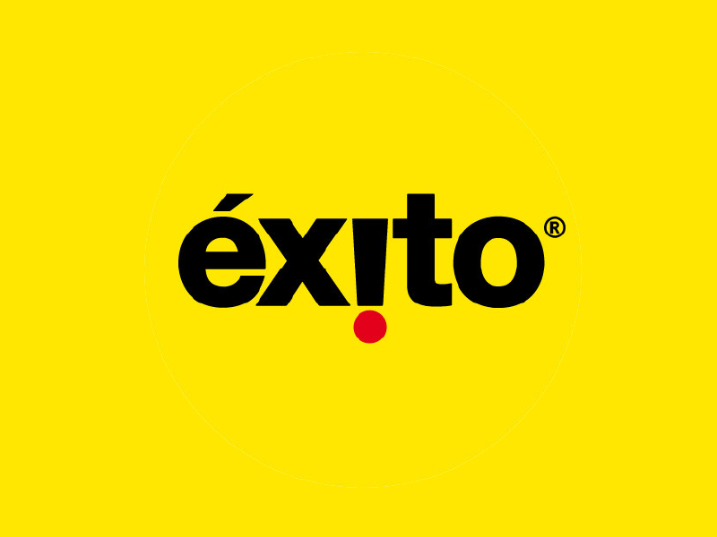

En KAYROS B&T no vendemos productos, te guiamos hacia las mejores tiendas tecnológicas. Nuestro propósito es ayudarte a tomar decisiones inteligentes, conectándote con lugares confiables donde podrás realizar tus compras con seguridad, buenos precios y garantía de calidad.
¿Por qué confiar en KAYROS B&T?
¿Qué tipo de tiendas encontrarás aquí?
Especializadas en computadores y accesorios
Expertas en celulares, tablets y smartwatches
Tiendas de periféricos y gaming